Run Git operations on Databricks Repos
The article describes how to clone a Git repo and perform other common Git operations with Databricks Repos. Databricks Repos is a visual Git client that integrates with the Databricks user interface and provides access to connected repos, which are represented as Git folders in your workspace.
Important
If you clone a Git repo using the CLI through a cluster’s web terminal, the files won’t display in the Databricks UI.
If you are unable to clone the repo and you’re using Azure DevOps with Microsoft Entra ID (formerly Azure Active Directory) authentication, see Issue with control access policy (CAP).
Add a repo and connect remotely later
You can also create a new Repo in Databricks and add the remote Git repository URL later.
To create a new Databricks Repo not linked to a remote Git repository, click the Add Repo button. Deselect Create repo by cloning a Git repository, enter a name for the Repo, and then click Create Repo.
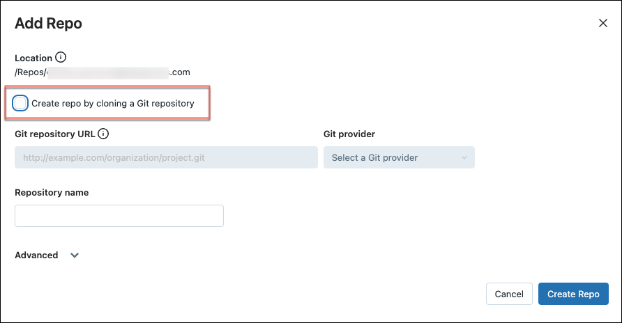When you are ready to add the Git repository URL, click the down arrow next to the Databricks Repo name in the workspace to open the Repo menu, and select Git… to open the Git dialog.
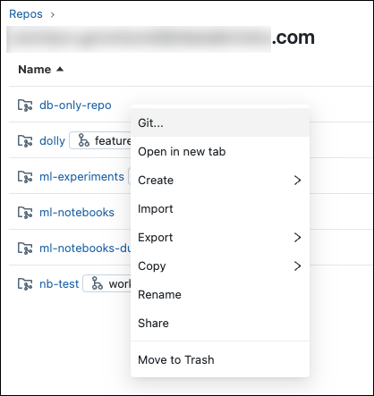In the Git repo URL field, enter the URL for the remote repository and select your Git provider from the drop-down menu. Click Save.
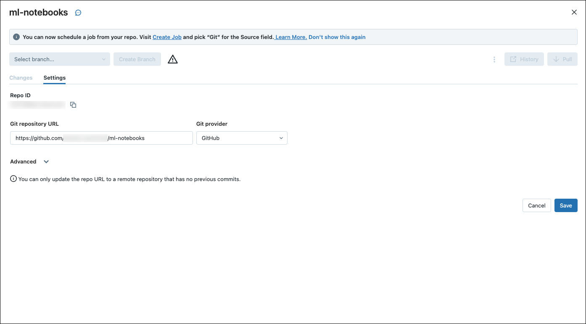
Clone a repo connected to a remote repo
In the sidebar, select Workspace > Repos.
Click Add Repo.
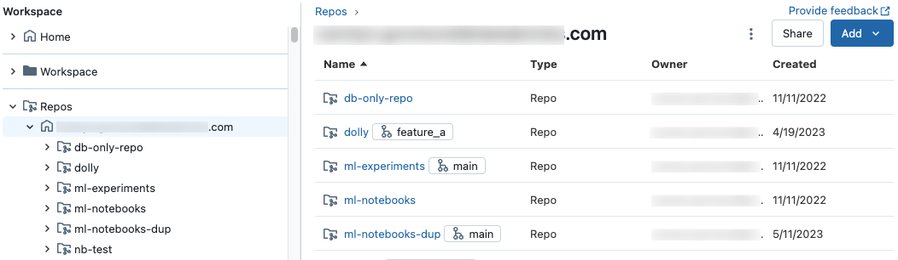In the Add Repo dialog, select Create repo by cloning a Git repository and enter the repository URL.
Select your Git provider from the drop-down menu, optionally change the name to use for the Databricks repo, and click Create Repo. The contents of the remote repository are cloned to the Databricks repo.
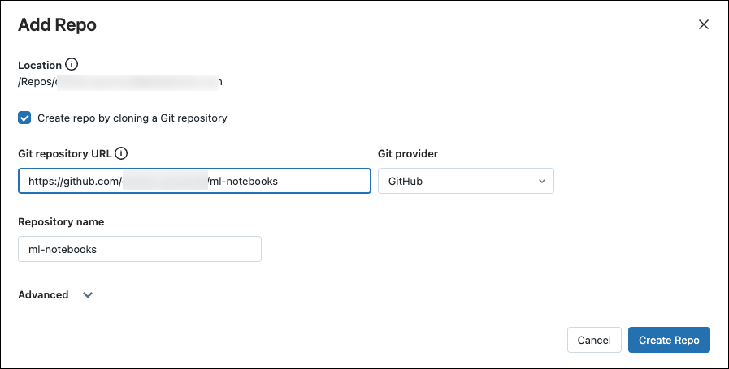
At this stage, you have the option to clone only a subset of your repository’s directories using sparse checkout. This is useful if your repository is larger than Databricks supported limits
Access the Git dialog
You can access the Git dialog from a notebook or from the Databricks Repos browser.
From a notebook, click the button next to the name of the notebook that identifies the current Git branch.
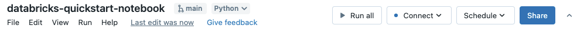From the Databricks Repos browser, click the button to the right of the repo name. You can also right-click the repo name and select Git… from the menu.
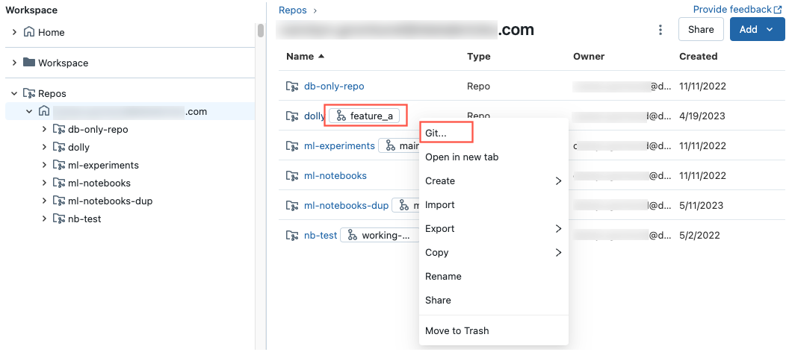
Pull changes from the remote Git repository
To pull changes from the remote Git repository, click 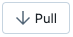 in the Git dialog. Notebooks and other files are updated automatically to the latest version in your remote Git repository. If the changes pulled from the remote repo conflict with your local changes in Databricks, you need to resolve the merge conflicts.
Important
Git operations that pull in upstream changes clear the notebook state. For more information, see Incoming changes clear the notebook state.
Merge branches
The merge function in Databricks Repos merges one branch into another using git merge. A merge operation is a way to combine the commit history from one branch into another branch; the only difference is the strategy it uses to achieve this. For Git beginners, we recommend using merge (over rebase) because it does not require force pushing to a branch and therefore does not rewrite commit history.
To learn more about the differences between merging and rebasing commits, please see Atlassian’s documentation on the subject.
If there’s a merge conflict, resolve it in the Repos UI.
If there’s no conflict, the merge is pushed to the remote Git repo using
git push.
Rebase a branch on another branch
Rebasing alters the commit history of a branch. Like git merge, git rebase integrates changes from one branch into another. Rebase does the following:
Saves the commits on your current branch to a temporary area.
Resets the current branch to the chosen branch.
Reapplies each individual commit previously saved on the current branch, resulting in a linear history that combines changes from both branches.
For an in-depth explanation of rebasing, see git rebase.
Warning
Using rebase can cause versioning issues for collaborators working in the same repo.
A common workflow is to rebase a feature branch on the main branch.
To rebase a branch on another branch:
From the Branch menu in the Repos UI, select the branch you want to rebase.
Select Rebase from the kebab menu.
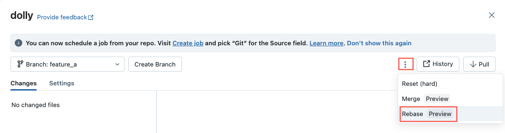Select the branch you want to rebase on.
The rebase operation integrates changes from the branch you choose here into the current branch.
Databricks Repos runs git commit and git push --force to update the remote Git repo.
Resolve merge conflicts
Merge conflicts happen when 2 or more Git users attempt to merge changes to the same lines of a file into a common branch and Git cannot choose the “right” changes to apply. Merge conflicts can also occur when a user attempts to pull or merge changes from another branch into a branch with uncommitted changes.
If an operation such as pull, rebase, or merge causes a merge conflict, the Repos UI shows a list of files with conflicts and options for resolving the conflicts.
You have two primary options:
Use the Repos UI to resolve the conflict.
Abort the Git operation, manually discard the changes in the conflicting file, and try the Git operation again.
When resolving merge conflicts with the Repos UI, you must choose between manually resolving the conflicts in the editor or keeping all incoming or current changes.
Keep All Current or Take Incoming Changes
If you know you only want to keep all of the current or incoming changes, click the kebab to the right of the file name in your notebook pane and select either Keep all current changes or Take all incoming changes. Click the button with the same label to commit the changes and resolve the conflict.
Tip
Confused about which option to pick? The color of each option matches the respective code changes that it will keep in the file.
Manually Resolving Conflicts
Manual conflict resolution lets you determine which of the conflicting lines should be accepted in the merge. For merge conflicts, you resolve the conflict by directly editing the contents of the file with the conflicts.
To resolve the conflict, select the code lines you want to preserve and delete everything else, including the Git merge conflict markers. When you’re done, select Mark As Resolved.
If you decide you made the wrong choices when resolving merge conflicts, click the Abort button to abort the process and undo everything. Once all conflicts are resolved, click the Continue Merge or Continue Rebase option to resolve the conflict and complete the operation.
Commit and push changes to the remote Git repository
When you have added new notebooks or files, or made changes to existing notebooks or files, the Repos UI highlights the changes.
Add a required commit message for the changes, and click Commit & Push to push these changes to the remote Git repository.
If you don’t have permission to commit to the default branch, such as main, create a new branch and use your Git provider interface to create a pull request (PR) to merge it into the default branch.
Note
Notebook outputs are not included in commits by default when notebooks are saved in source file formats (
.py,.scala,.sql,.r). For information on committing notebook outputs using the IPYNB format, see Control .ipynb notebook output commitsSee instructions for resolving merge conflicts earlier in this article.
Switch to a different branch
You can switch to (checkout) a different branch using the branch dropdown in the Git dialog:
Create a new branch
You can create a new branch based on an existing branch from the Git dialog:
Git reset
In Databricks Repos, you can perform a Git reset within the Databricks UI. Git reset in Databricks Repos is equivalent to git reset --hard combined with git push --force.
Git reset replaces the branch contents and history with the most recent state of another branch. You can use this when edits are in conflict with the upstream branch, and you don’t mind losing those edits when you reset to the upstream branch. Read more about git `reset –hard`.
Reset to an upstream (remote) branch
With git reset in this scenario:
You reset your selected branch (for example,
feature_a) to a different branch (for example,main).You also reset the upstream (remote) branch
feature_ato main.
Important
When you reset, you lose all uncommitted and committed changes in both the local and remote version of the branch.
To reset a branch to a remote branch:
In the Repos UI from the Branch menu, choose the branch you want to reset.
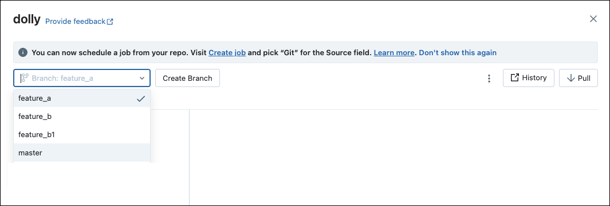Select Reset from the kebab menu.
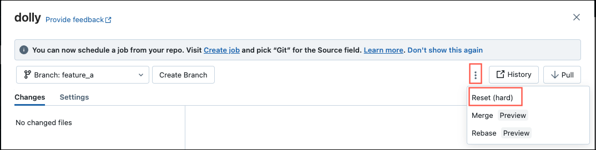Select the branch to reset.
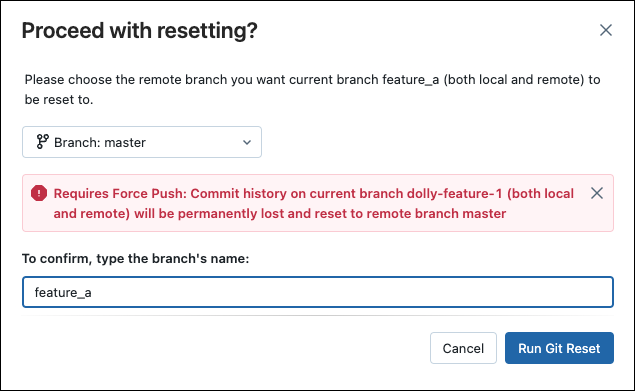
Configure sparse checkout mode
Sparse checkout is a client side setting which allows you to clone and work with only a subset of the remote repositories’s directories in Databricks. This is especially useful if your repository’s size is beyond the Databricks supported limits.
You can use the Sparse Checkout mode when adding (cloning) a new repo.
In the Add Repo dialog, open Advanced.
Select Sparse checkout mode.
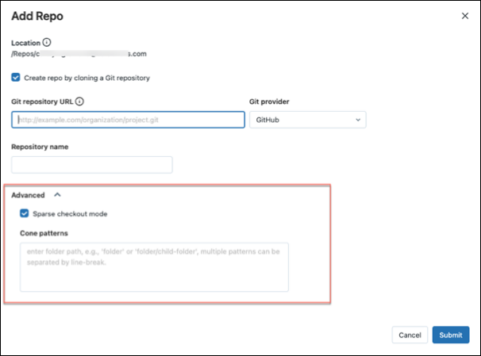In the Cone patterns box, specify the cone checkout patterns you want. Separate multiple patterns by line breaks.
At this time, you can’t disable sparse checkout for a repo in Databricks.
How cone patterns work
To understand how cone pattern works in the sparse checkout mode, see the following diagram representing the remote repository structure.
If you select Sparse checkout mode, but do not specify a cone pattern, the default cone pattern is applied. This includes only the files in root and no subdirectories, resulting in a repo structure as following:
Setting the sparse checkout cone pattern as parent/child/grandchild results in all contents of the grandchild directory being recursively included. The files immediately in the /parent, /parent/child and root directory are also included. See the directory structure in the following diagram:
You can add multiple patterns separated by line breaks.
Note
Exclusion behaviors (!) are not supported in Git cone pattern syntax.
Modify sparse checkout settings
Once a repo is created, the sparse checkout cone pattern can be edited from Settings > Advanced > Cone patterns.
Note the following behavior:
Removing a folder from the cone pattern removes it from Databricks if there are no uncommitted changes.
Adding a folder via editing the sparse checkout cone pattern adds it to Databricks without requiring an additional pull.
Sparse checkout patterns cannot be changed to remove a folder when there are uncommitted changes in that folder.
For example, a user edits a file in a folder and does not commit changes. She then tries to change the sparse checkout pattern to not include this folder. In this case, the pattern is accepted, but the actual folder is not deleted. She needs to revert the pattern to include that folder, commit changes, and then reapply the new pattern.
Note
You can’t disable sparse checkout for a repo that was created with Sparse Checkout mode enabled.
Make and push changes with sparse checkout
You can edit existing files and commit and push them from the Repos interface. When creating new folders of files, include them in the cone pattern you specified for that repo.
Including a new folder outside of the cone pattern results in an error during the commit and push operation. To fix it, edit the cone pattern to include the new folder you are trying to commit and push.
Control .ipynb notebook output commits
To use this feature, you need to enable commit .ipynb notebook outputs. See Allow committing .ipynb notebook output.
When you commit an .ipynb file, Databricks can create a config file to help you control how you commit outputs: .databricks/commit_outputs.
If you have a .ipynb notebook file but no config file in your repo, open the Git Status modal.
In the notification, click Create commit_outputs file.
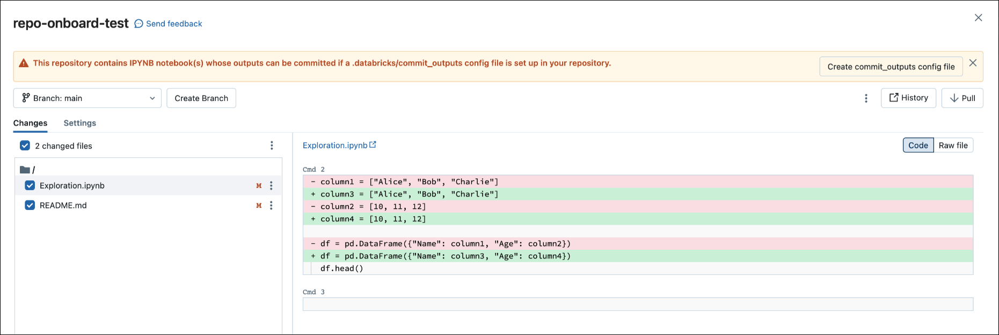
Alternatively, if not present, a config file can also be made from the file menu. The File menu has a status and control allowing you to automatically update the config file to specify including or excluding outputs for a specific notebook.
On the File menu, select Commit notebooks outputs.
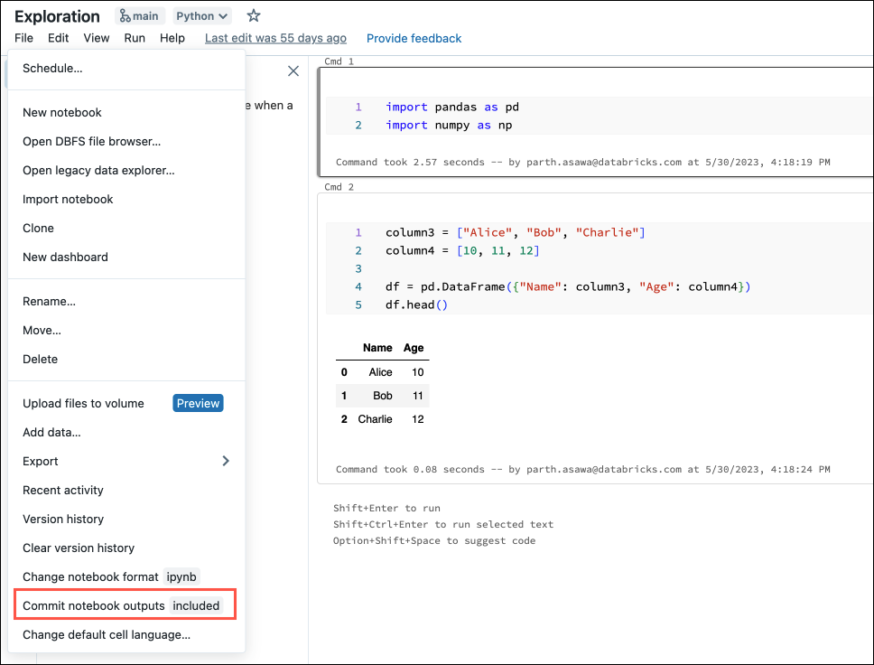In the dialog box, confirm your choice to commit notebook outputs.
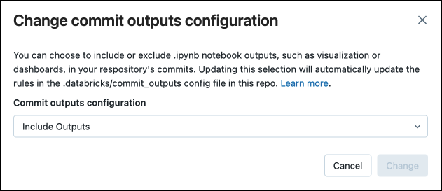
Patterns for a repo config file
The commit outputs config file uses patterns similar to gitignore patterns and does the following:
Positive patterns enable outputs inclusion for matching notebooks.
Negative patterns disable outputs inclusion for matching notebooks.
Patterns are evaluated in order for all notebooks.
Invalid paths or paths not resolving to
.ipynbnotebooks are ignored.
Positive pattern: To include outputs from a notebook path folder/innerfolder/notebook.ipynb, use following patterns:
**/*
folder/**
folder/innerfolder/note*
Negative pattern: To exclude outputs for a notebook, check that none of the positive patterns match or add a negative pattern in a correct spot of the configuration file. Negative (exclude) patterns start with !:
!folder/innerfolder/*.ipynb
!folder/**/*.ipynb
!**/notebook.ipynb
Use the Repos API
Manage Git provider PATs with the Repos API.
Databricks Repos best practices
Databricks Repos (Git folders) effectively behave as embedded Git clients in your workspace. Here are a few best practices you can observe to make team collaboration more effective.
Create a Databricks Git folder for each user that integrates with the same Git repository. Although multiple users can contribute content to a Git folder, only one designated user should perform Git operations such as pull, push, commit, and branch switching. If multiple users perform Git operations on a Git folder, branch management can become difficult and error-prone, particularly in a situation where a user switching a branch switches it for all other users. If each user works in their own development branch, each user should set up and use their own Git folder.
Be aware that a deleted remote branch remains present in the associated Git folder. After deleting a branch on your Git repository, the local version in your Databricks Repo (Git folder) remains for some time. Local branches in Databricks cannot be deleted, so if you must remove them, you must also delete and reclone the repository.